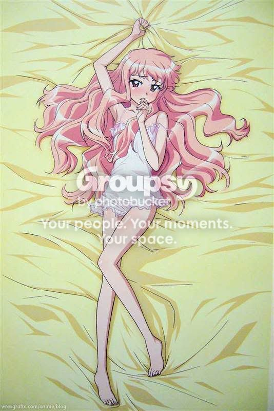

http://eco.froztic.in.th/archive/ecofanclub/
กระทู้ [FC]~FanArt Collection~ วาดได้ตามใจฉัน
http://eco.froztic.in.th/archive/ecofanclub/viewtopic.php?f=21&t=1294
หน้า 118 จากทั้งหมด 143

ของคุณ KonekoRei สวยทุก รูปเลยอ่ะ ลงสีก็แหล่มมากค่า~* 

คนขี่มังกร หน้ากวนดีอะ-*-
เอิ๊กๆ
เอิ๊กๆ
ท่าน Beater ลูกชายน่ารักน่ากดอีกแระ หึ
แต่ๆๆๆ...ผมต้องบังตาจิ มะใช่ตาบังผม
แต่ๆๆๆ...ผมต้องบังตาจิ มะใช่ตาบังผม
KonekoRei เขียน:NokaChan เขียน:ลองเอาคาแรคเตอร์ตัวของยูยังมาจิคะ งิงิ :oops:
เอ อันนี้หมายถึงมาสคอตของคุณยูจังรึเปล่าเอ่ย OAO? [มาสคอต - คาแรคเตอร์แทนตัวเอง]
ชอบรูป HBD ของคุณ NokaChan ค่ะ สีฟ้าสวยๆ >///<b+
ภาพของคุณ CruximissA วาดดีเทลสวยแล้วก็ละเอียดดีจังค่ะ ชอบงานดินสอเส้นสะอาดวาดสวยๆแบบนี้ล่ะ >w<!!
ไม่ได้แวะมานานเลยเอารูปมาแปะค่ะ
รูปฮัลโลวีนออริจินัลกับมาสคอตเพื่อนค่ะ ใช้เป็นธีมบลอคช่วงฮัลโลวีน
http://img.photobucket.com/albums/v606/ ... en2007.jpg
Trick Or Treat แอบเผาอย่างหนัก วาดลง contest ของเพื่อนใน DA ค่ะ
http://img.photobucket.com/albums/v606/ ... ween07.jpg
รูป HBD น้องที่รู้จักกัน วาดชิกิตี้เพราะงานคอสที่ขอนแก่นเมื่อช่วงปลายเดือนที่แล้ว(ก่อนวันเกิด) น้องเค้าคอสชิกิค่ะ
http://img.photobucket.com/albums/v606/ ... s/hdsl.jpg
รุปสุดท้าย เพิ่งวาดเสร็จไม่นานนัก ใช้โปรแกรมใหม่ที่ติดในอยู่ตอนนี้ โปรแกรม SAI ค่ะ
ลักษณะโปรแกรมให้ความรู้สึกเหมือนเอา Painter มาผสมกับ Opencanvas ตัวโปแกรมเบา ใช้ค่อนข้างง่าย(ถ้าเคยใช้ OC มาบ้าง) วาดโครมจังกับมุคุจังค่ะ
http://img.photobucket.com/albums/v606/ ... 69dywt.jpg
รูปตอนใช้โปแกรม SAIค่ะ
http://img.photobucket.com/albums/v606/ ... i-bcnf.jpg
ถ้าใครสนใจโปรแกรม SAI ลงเข้าไปดูทางนี้นะคะ :oops:
Ver. Eng >> http://detstwo.com/pub/saia5-eng/
Ver. Jap >> http://www.systemax.jp/sai/
ปล. ขออภัยที่ตามคอมเมนต์ภาพไม่ได้ทุกภาพเนื่องจากยังไม่ได้นอน =A=)" แล้วก็ขออภัยที่รูปใหญ่แล้วก็เยอะไปหน่อยค่ะ แหะๆ^^"
*มาแก้บางรูปเป็นลิงค์ค่ะ=A="
งามทุกภาพเลยท่านO_oชอบลายเส้น สี ชอบหมดเลยง้า>_<
ทำไงจะลงสีผมได้ละเอียดแบบนั้นเนี่ยT_T
ปล.อยู่ขอนแก่นหรอคะ แล้วที่ขอนแก่นมีงานคอสด้วยหรอนิ ตกข่าวอย่างแรง
เรียนขอนแก่นซะเปล่าTwT


บักเกต?? มันคือ...-*-
Aofkung เขียน:บักเกต?? มันคือ...-*-
Photobucket จ้า


อึ้ย หลุยส์ ก็น่ารักดูแล้วเรื่องนี้ ใครมีพูดไทยมั้ง จขทก. มีมั้ยงิ
เพื่อนอาวมาให้ดูมันพูดญี่ปุ่น ซัฟอังกฤษ ก็แปลได้หรอก แต่มัน...
อยากฟังเสียงภาษาไทยอ๊า :oops:
แต่ว่าหลุยส์หน้าอกเล็กจิงๆเลยน๊า (โดนใจจิงๆเยย ชอบอกโตๆ ยิ่งโตยิ่งดี ยิ่งใหญ่เรายิ่งชอบ ถ้าอาวหน้าลงไปละก็นะ มะอยากคิดเล๊ยย (หายใจไม่ออก แอ๊...ก) ประชดงับ ของเราก็ไม่มีเลยชอบ ตูมๆ 8) )
Ps: ที่ฝากรูป www.Photobucket.com
ดี มีคุณภาพ ฝากทั้งรูป วีดีโอ ทำสไลด์ภาพ ก็ได้ ได้หลายอย่าง (จนน่าปวดหัว) ใช้เหมือนกันงิ (เพิ่งเจอใหม่ สามารถสร้างตัวละคร 3D ได้แต่ต้องมีโปรแกรม JaVa ในเครื่องถ้าไม่มีก็โหลดใส่ได้เลย แล้วจะเห็น Animation ที่สร้างเองขยับได้  hock: )
hock: )
Ps2: รูปที่ฝากไว้ ไปหามาทาง Google หน้าแรก โดนเลยhock:
Ps3: ตอนนี้มีประกวดภาพเกี่ยวกับวันพ่อนินา เขาว่าตัดต่อภาพในคอมหรือวาดเองก็ได้
ประมาณนี้ :
GM[Icy] Said: ไม่จำกัดความคิดสร้างสรรค์ค่ะ สามารถใช้โปรแกรมหรือวาดเองก็ได้
แต่ต้องมีต้นฉบับเป็นไฟล์ .psd หรือ .ai ด้วยค่ะ ถ้าวาดในกระดาษก็ต้องแสกน
เป็นไฟล์ส่งมาด้วยนะคะ จะใช้ตัวละครในเกมมาตัดต่อหรือะไรก็ได้ค่ะ ได้ทั้งหมด
ง่ายๆ เพื่อนๆต้องสแกน ถ่ายรูป เด๋วภาพไม่ชัด ของรางวัลก็ เสื้อยืด ลายสุดเท่ห์ (ซึ่ง
ยังไม่เห็นหน้าตาสุดเท่ห์เลยละงิ)<= น่าได้นะ ถ้าลายมันน่ารัก ม่ายช่ายมีแค่
ตัวหนังสือเขียนข้างหลังเสื้อ เป็นโลโก้ ECO นะเศร้าเยย ถ้าเป็นรูปซาก้า 5 ที่มี NvN
ภาพประกอบ คงเท่ห์ดี ว่ามั้ยงิ???
เพื่อนอาวมาให้ดูมันพูดญี่ปุ่น ซัฟอังกฤษ ก็แปลได้หรอก แต่มัน...
อยากฟังเสียงภาษาไทยอ๊า :oops:
แต่ว่าหลุยส์หน้าอกเล็กจิงๆเลยน๊า (โดนใจจิงๆเยย ชอบอกโตๆ ยิ่งโตยิ่งดี ยิ่งใหญ่เรายิ่งชอบ ถ้าอาวหน้าลงไปละก็นะ มะอยากคิดเล๊ยย (หายใจไม่ออก แอ๊...ก) ประชดงับ ของเราก็ไม่มีเลยชอบ ตูมๆ 8) )
Ps: ที่ฝากรูป www.Photobucket.com
ดี มีคุณภาพ ฝากทั้งรูป วีดีโอ ทำสไลด์ภาพ ก็ได้ ได้หลายอย่าง (จนน่าปวดหัว) ใช้เหมือนกันงิ
Ps2: รูปที่ฝากไว้ ไปหามาทาง Google หน้าแรก โดนเลย


Ps3: ตอนนี้มีประกวดภาพเกี่ยวกับวันพ่อนินา เขาว่าตัดต่อภาพในคอมหรือวาดเองก็ได้
ประมาณนี้ :
GM[Icy] Said: ไม่จำกัดความคิดสร้างสรรค์ค่ะ สามารถใช้โปรแกรมหรือวาดเองก็ได้
แต่ต้องมีต้นฉบับเป็นไฟล์ .psd หรือ .ai ด้วยค่ะ ถ้าวาดในกระดาษก็ต้องแสกน
เป็นไฟล์ส่งมาด้วยนะคะ จะใช้ตัวละครในเกมมาตัดต่อหรือะไรก็ได้ค่ะ ได้ทั้งหมด
ง่ายๆ เพื่อนๆต้องสแกน ถ่ายรูป เด๋วภาพไม่ชัด ของรางวัลก็ เสื้อยืด ลายสุดเท่ห์ (ซึ่ง
ยังไม่เห็นหน้าตาสุดเท่ห์เลยละงิ)<= น่าได้นะ ถ้าลายมันน่ารัก ม่ายช่ายมีแค่
ตัวหนังสือเขียนข้างหลังเสื้อ เป็นโลโก้ ECO นะเศร้าเยย ถ้าเป็นรูปซาก้า 5 ที่มี NvN
ภาพประกอบ คงเท่ห์ดี ว่ามั้ยงิ???

วันนี้กลับไปอ่านเมลเจอจดหมายตอบกลับของโค๊ก เรื่องงานประกวด COKE CREATER CARACTER DESIGN ที่อเมริกา อะไรทำนองนี้แบบว่าส่งไปนานแล้ว
ที่เค้าให้ออกแบบตัวประหลาดเพิ่ม(ที่ลำเลียงขวดโค๊กทูโกออกมาจากตู้หยอดเหรียญ) จะเอาไปลงโฆษณาตัวต่อไปมั๊งถ้าจำไม่ผิด
เจ็บใจตรงที่ว่า เค้าเอาเฉพาะผลงานทางโซนอเมริกาเท่านั้น รู้งี้แจ้งที่อยู่เป็นแม๊คซิโก ดีกว่านะ ซินยอ เอิ๊กๆ
comelyfay สวยดี ลงสีเลย*-*
ส่วนตัว ไม่ชอบภาคย์ไทย-*- ชอบเสียงคนยุ่นมากกว่า แบ๊วก่า*0* ยิ่งเสียงหลุยส์ ได้รมณ์มากมาย*..*
หุหุ ลงประกวดวาดรูปน่าสนดีนะ แต่ขอบาย-3-
แมว!!! มันกำลังทำไรกัน-*-
สำหรับผมแล้ว คำว่า "กระดาน" ก็เป็นส่วนหนึ่งของชีวิตผม*0*
/ใหญ่ๆไม่ชอบ ชอบรุ่นพกพา 5555+
ส่วนตัว ไม่ชอบภาคย์ไทย-*- ชอบเสียงคนยุ่นมากกว่า แบ๊วก่า*0* ยิ่งเสียงหลุยส์ ได้รมณ์มากมาย*..*
หุหุ ลงประกวดวาดรูปน่าสนดีนะ แต่ขอบาย-3-
แมว!!! มันกำลังทำไรกัน-*-
สำหรับผมแล้ว คำว่า "กระดาน" ก็เป็นส่วนหนึ่งของชีวิตผม*0*
/ใหญ่ๆไม่ชอบ ชอบรุ่นพกพา 5555+